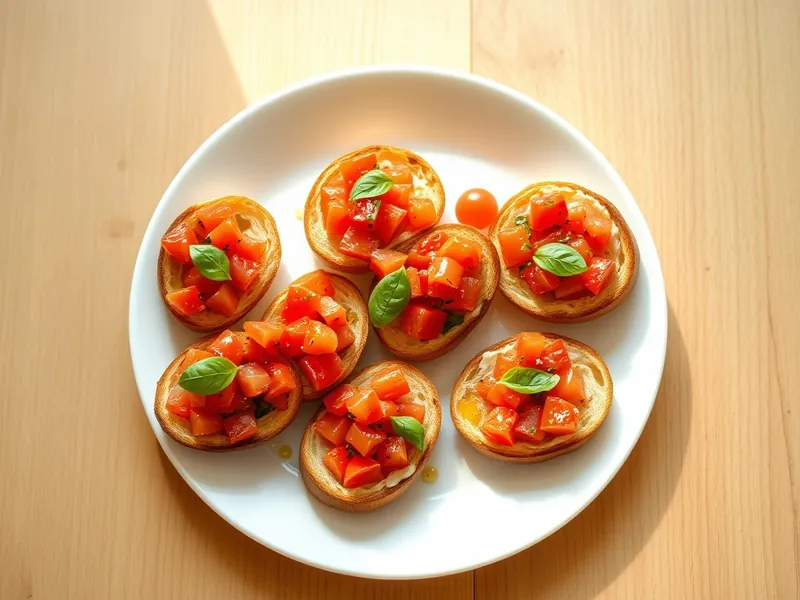

Брускетта с помидорами и базиликом
Подсушенный хлеб с чесноком, сочными помидорами, базиликом и оливковым маслом
20 мин4 порц.270 ккал на порциюБ 6 · Ж 12 · У 33Итальянская кухня
Открыть в приложении: порции, таймеры, список покупок
Продукты на 4 порц.
- Хлеб белый8 шт
- Помидоры3 шт
- Базилик1 пучок
- Чеснок1 зуб.
- Оливковое масло3 ст. л.
- Соль2 щеп.
- Перец чёрный молотый1 щеп.
Как готовить
- Нарежьте помидоры мелкими кубиками, слейте лишний сок с семечками.
- Смешайте помидоры с порванными листьями базилика, 2 ложками оливкового масла, солью и перцем, оставьте на 10 минут.
- Сбрызните ломтики хлеба оставшимся маслом и подсушите при 200 °C (сильный жар) 5-6 минут до хрустящей золотистой корочки.
- Натрите горячий хлеб разрезанным зубчиком чеснока.
- Выложите помидорную смесь на хлеб горкой и подавайте сразу.
Совет. Собирайте брускетты непосредственно перед подачей: через 15 минут хлеб пропитается соком и перестанет хрустеть.